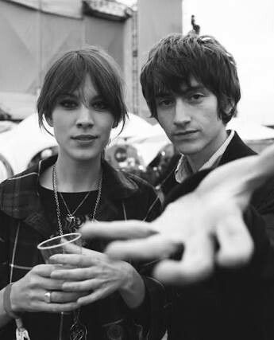
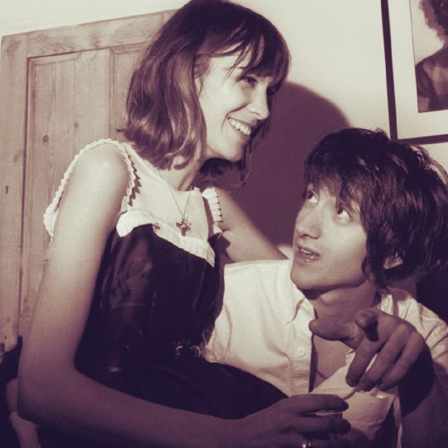
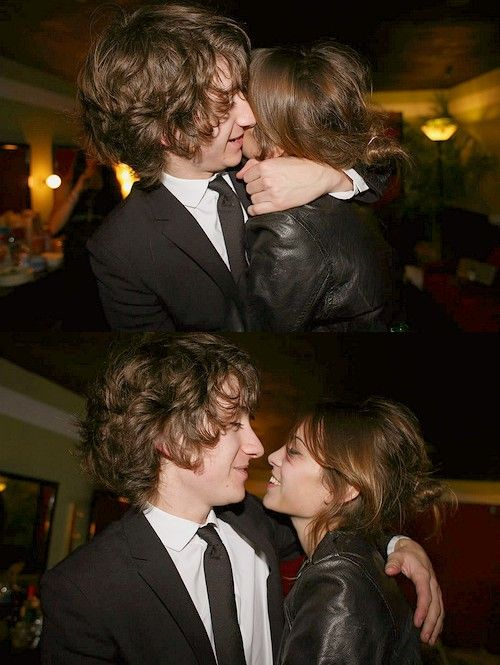

7 de Abril del 2024
Mi parte favorita del dia, es cuando llega la noches porque asi puedo verte, hoy 7 de Abril del 2024, soñe contigo, soñe que querias arreglar las cosas y querias volverlo a intentar, te veias igual de hermosa que la ultima vez que te vi, me decias que me amabas, esa niña de 14 años que conoci un 4 de marzo del 2022, la ame como no tienes idea y la extraño mucho, pero la cague y se fue y no se si para siempre, como quisiera volver en el tiempo y solucionar todo, disfrutar del amor que me dabas y ser mejor, pero no se puede, se que yo puedo ser mejor solo que ya no se como demostrartelo :/
Quisiera volver contigo, es mi mayor deseo por el momento, me la paso llorando todos los dias arrepentido por no hacer mas, se que podia hacer mas pero no me di cuenta lo importante que eres en mi vida y ahora toca sufrir las consecuencias, y pues si te quiero seguir esperando, no volveremos hoy ni mañana, capaz dentro de unos años cuando te sientas mejor, o tal vez nunca, pero ya e decidido que te voy a esperar, no importa cuando pase, creo que te lo volvere a proponer cuando pasen algunos años, no lo se dependera de tu situacion amorosa, aunque yo quisiera tener otra oportunidad para que te des cuenta que te amo demasiado y que cambiaria mil cosas solo por tiquisiera volver para demostrarte que si podemos ser como ALex Turner y Alexa Chung, tu eres y siempre seras mi Alexa Chung, es como si fueras mi Magali Chavez, tu y yo podriamos ser estos:
Solo quisiera que me dejaras volverlo a intentar una sola vez más y veras que no te arrepentiras, yo solo quiero mi vida contigo y no quiero amigas ni amigos, solo te quiero a ti a decir verdad, no se como vaya a salir esto pero creo que hare una seccion de cartas que hare cada cierto tiempo, y cada que piense en ti vendre a escribirte aqui
Quiero madurar y voy a madurar para que cuando lo intentemos de nuevo (solo si tu quieres) 0 celos y 0 todo lo toxico solo quiero pasar mi vida contigo y que vea así quiero poder ser el que causa tu sonrisa, la tuya es tan hermosa como la de Alexa, esas igual de hermosa que ella, o hasta mas a decir verdad, mientras que escribo esto me dan ganas de llorar porque tu carita es tan hermosa que fak, me acuerdo la primera vez que te vi, mis ojos fak, mis ojos sonrieron de la felicidad al ver una mujer tan hermosa como tu, solo quiero que lo volvamos a intentar para ser como ellos, quisiera acabar la uni para poder tener trabajo y darte todo lo que te mereces, no menos, siempre llegar del trabajo y traerte un ramo de rosas y como bonitas, tener pijamas conbinadas,todo que siempre soñamos o alguna vez dijimos, quiero que tengamos nuestra casa con muchos gatitos, sigo teniendo ese sueño en mi mente
soy un pendejo por no saber apreciar el amor de una hermosa mujer, estoy sufriendo mucho sin ti a decir verdad, me haces falta machin, yo te amo mucho y sigo enamorado de ti, como quisiera volver a lo de antes, cuando eramos muy felices los dos pero eso dudo que pase, por el momento no va a pasar, pero sere fuerte hasta que llegue ese dia que tanto espero, la neta, cuando me sienta solo y con ganas de hablarte, me voy a venir aqui a hablar contigo aunque no los veas, voy a crear una seccion para eso tambien
Quisiera volver a enamorarte pero no se como, no se ni como voy a enviarte esto, creo que te voy a marcar para escuchar tu linda voz de nuevo, me gusta mucho a decir verdad, la extraño mucho, solo quisiera tenerte aqui para poder abrazarte todo el dia y decirte lo mucho que te amo, la verdad yo no quiero a nadie que no seas tu la verdad mi yo de 15 años, no era para ti, pero tu siempre seras para mi :( tu me pones feliz todo el tiempo a decir verdad, no hay dia que no estuviera feliz a tu lado, solo quisiera que cumplamos todo lo que dijimos pero con una mentalidad nueva, una mentalidad de amarnos mucho y vivir juntos una eternidad, te voy a demostrar que solo te voy a amar a ti durante el resto de mi vida, vamos a tener un amor igual de bonito que ellos:
espero tener una mentalidad mejor para el da que regreses, aqui me despido el 7 de Abril del 2024, luego hare otro informe, cuando me sienta lo suficiente triste como para querer hablar contigo de como me siento, te Adoro con toda mi alma mi amor aunque yo ya no sea tu amor, tambien la playlist que te hice decidi terminarla con 505 canciones, y la ultima, la 505 es "505" de Arctic Monkeys, me gustan muchos sus canciones y ahora las escucho desde que e fuiste, te amo meu, me quede dormido y acabo de despertar, pero desperte buscandote JAJAJJAJA, que tonto estoy
Me quitaste las ganas de conocer a alguien mas, perdon por amarte tanto, pero eres todo lo que mi alma necesita y eres la unica persona con la que quiero todo y absolutamente todo.
8 de Abril del 2024
hoy esta siendo un dia malo, volvi a soñar contigo, soñe que mandabas mensaje y senti un vacio feo, luego mi profa hablo sobre que uno valora hasta que lo pierde y tiene razon, no supe valorarte a tiempo y me di cuenta muy tarde de que en verdad te amo y quiero algo duradero contigo, pero pues te perdi y no puedo hacer nada mas que esperar, la verdad siento que si estamos destinados a algo eterno, solo que no era el momento de conocernos, no se, a veces solo quisiera que volvieramos a ser como antes, me la paso escuchadno la playlist que me hiciste aunque las ultimas canciones se refiren a que ya no me quieres y que te valgo vrg y eso esta bien creo, aunque tu ya no sientas nada por mi, yo seguire enamorado por el resto de mi vida de ti, esos sentimientos que tengo hacia ti dudo que desaparezcan, y si estas leyendo todo esto, es porque aun quiero algo contigo, me gustan mucho los monos articos, me recuerdan mucho a ti, te amo mucho mi amor, voy a seguir mejorando tu pagina <3
me pongo muy triste y quiero llorar a cada rato, la verdad no aguanto a estar sin ti, ahora me dan ganas de vomitar a cada rato a decir verdad, aveces ni tengo ganas de comer porque no se, simplemente ya no me interesa, gran parte del dia me la pasaba acostado hasta que decidi hacer esto, la verdad espero que tenga un accidente y quede en coma para dormir casi para siempre o para siempre para poder verte todos los dias a todas horas y cumplir todo lo que nos prometimos alguna vez, mi promesa de que te iba a amar durante toda mi vida sigue en pie JA te gane el te amo mas, pero no es gracioso si no estas conmigo, solo es triste a decir verdad, yo ya dije que no quiero nada si no es contigo, tu eres perfecta lo sabes perfectamente, tu eres mucho para mi pero eres lo unico que quiero a decir verdad :( pero no puedo hacer nada para recuperarte creo, solo quiero vivir solito si no es contigo, vivir mi vida sin amor de alguien mas, porque que hueva conocer a alguien mas que no me sepa amar como tu me amaste, soy un pendejo por no saber valorarte, me golpeo la cabezota gran parte del dia repitiendo eso, cuando despierto siento un vacio y te busco, veo si si llego ese mensaje, pero no hay nada, nunca hay nada y dudo que vuelva a tener un "buenos dias mi amor" de tu parte, yo te lo digo diciendo en tu chat porque es muy dificil superarte aunque tu ya lo hayas hecho, ya me hayas superado, y no te echo culpa de nada, soy un oendejo inutil de mierda, un vago que solo queria tener tu amor, cada que pienso que estas con alguien mas, me pongo muy triste a decir verdad, ese era mi mayor miedo, que alguien te robe un beso, que alguen mas te tome de la mano, eres dificil de superar lo sabes, yo vi tu desinteres desde hace ya tiempo antes de que terminaramos, pero lo queria seguir intentando porque te amo mucho y queria sacar adelante la relacion, pero tu ya pensabas en pasar tiempo con alguien mas, y esta bien, eso esta bien, algun dia te volvere a rogar cuando ya no tengas a nadie, estoy haciendo todo esto para que te des cuenta de que aun te amo con toda el alma y quisiera pasar el resto de mi vida contigo, quisiera verte cada mañana y decirte que eres la que alegra mis dias enteros, pero pues eso va a estar dificil que vuelva a suceder, quisiera que te volvieras a enamorar de mi a decir verdad, el amor que me demostraste es muy hermoso y no quiero que alguien mas me desmuestre un amor similar, solo te quiero a ti :(, hoy vi un tik tok que decia que si en verdad amas a esa persona y la perdiste, que intentes recuperarla, y eso quiero hacer, quiero recuperarte aunque pase una eternidad intentandolo, en verdad quiero vivir mi vida contigo, quiero que veas que un hombre puede cambiar si se lo propone, quiero hacer todo por ti :(.
espero que algun dia pienses lo mismo que yo, en verdad yo estoy locamente enamorado de ti aunque tengamos una corta edad, quiero todo contigo aunque tengamos una corta edad, pero imaginate decirle a nuestros hijos que nos enamoramos desde muy jovenes y que tuvimos dificultades pero que siempre lo intentamos siempre lo intentabamos, la verdad seria muy bonito todo eso, muchos dicen que estoy obsesionado contigo, pero solo se que siento que tu eres el amor de mi vida y que nadie mas lo podra ser, capaz el amor de tu vida sea otra persona, pero quiero intentar serlo, quiero intentar ser el amor de tu vida quiero intentarlo una vez mas, a decir verdad no tengo planeado cansarme nunca, por ti no, tu vales mucho la pena, y te lo voy a demostrar, no voy a estar con nadie mas porque la verdad nadie es como tu, nadie podra ofrecerme lo que tu me ofreciste alguna vez, y perdon si soy egoista pero solo te quiero para mi y seguire luchado para eso, seguire esperando el tiempo que tu quieras, porque estoy locamente enamorado de ti y quiero una vida entera contigo, eres tu y solo tu la dueña de mis sueños, ti amo muak.
me volvi a quedar dormido llorando jajajja y lo de siempre, desperte y senti un mensaje tuyo, pero como es comstumbre, no habia nada y siempre sera a ti, espero acostumbrarme a esa sensacion, creo que me voy a poner mal, me han esado doliendo el corazón, como piquetitos y siempre tengo nauesas y ganas de vomitar pero vomito pura pinche saliva, me la paso durmiendo gran parte del dia a decir verdad, a veces no tengo ganas de vivir pero sigo con la fe y esperanza de que algun dia tu y yo si podamos cumplir todo lo prometido y seamos el felices para siempre que siempre quise contigo y solo contigo, la verdad no se que hacer con mi vida, creo el miercoles voy a ir al doctor para saber que tengo espero nada malo JAJAJA, vi que cambiaste la descripción de la playlist que me hiciste ya hace tiempo, me gusta mas la otra, la de "yo las canciones, tu la magia" asi con corazones a los lados, no entiendo porque antes no me gustaban los monos articos, tal vez me gustan porque me recuerdan a ti, tal vez me gustan para que en algun momento cuando te vuelva a ver, las podamos cantar a todo pulmon y podamos ser felices algun dia, me estoy muriendo de amor a decir verdad, tu dijiste que no podia morir de amor y te estoy demostrando lo contrario JAJJAJAJ, me la podria pasar horas aqui diciendote todo esto aunque se que posiblemente nunca lo veas pero al menos quiero intentarlo, espero no tener anemia o una mierda asi en un futuro, me estoy dando cuenta que ahora me lleno mas rapido, pero como mucho menos, espero estar bien para poder intentarlo algun dia contigo si así lo quieres tu tambien claro, ahora me encuentro sentado escribiendo todo esto mientras que escucho la playlist que me hiciste, dudo que escuches la que yo te hice a decir verdad, capaz algun dia cuando te sientas sola sin nadie, solo capaz, lo dudo a decir verdad, tu eres una persona muy hermosa en todos los sentidos y se que nunca te quedaras sola y siempre va a ver alguien detras de ti (yo) yo y siempre querre ser yo aunque se que eso es imposible JAJAJAJ siempre va a ver mas personas a las cuales les gustes, me deprimo gran parte del dia, y esa gran parte del dia estoy aqui, estoy aqui porque extraño hablar contigo, aparte que no hablo con nadie, a nade le importo, a nadie le intereso a decir verdad tu eras la unica y la tenia que cagar al no cuidar la relacion, hace rato me quede dormido no me acuerdo si lo comente pero creo que si, me quede dormido gritado y llorando porque soy un estupido, soy un estupido porque te deje ir a ti, deje ir al amor de mi vida, y eso no cambiara ni hoy ni mañana, o se cuando vuelvas, pero espero y pronto, porque sin ti siento que me muero a dedcir verdad, te amo como no tienes idea y ahora ya no puedo vivir sin ti a decir verdad, aveces solo quiero un abrazo tuyo y que me digas que todo va a estar bien y que me ams mucho pero ese tipo de milagros no suceden JAJAJA, tengo planeado regalarle unas rosas a tu ama el dia de la mamá, ella tambien fue importante en mi vida de alguna manera, la quise como una segunda mamá y la extraño a decir verdad, extraño sus regaños, extraño todos esos momentos que pasamos juntos, los malos y los buenos, podria estar aqui por horas a decir verdad, no hago otra cosa mas que extrañarte y creo que asi sera mi vida gran parte de ella, a veces mientras lloro me dan ataques de ansiedad, no puedo respirar y estoy temblando todo el rato, me dan ganas de volver a ser feliz contigo, dudo que otra persona me aga feliz como tu, y la verdad no lo quiero comprobar, solo te quiero a ti a decir verdad, soy egoista y me duele saber que alguien mas esta haciendo lo que te hacia, me siento replazable a decir verdad, porque no paso ni unos meses, pero te entiedo a decir verdad, no es como que alguien me quiera o me haya querido en el pasado JAJAJA tu eres la unica que se fijo en mi pero ni pedo, toca soportar, a veces no le veo sentido a seguir la vida, a veces solo quisiera chocar y quedar en coma para no despertar y estar siempre a tu lado en mis sueños aunque solo sean sueños, ya no me dan ganas de nd a decir verdad, antes trabajaba y me gustaba ganar mi dinerito, pero ya no me han dado ganas, me deprimi machin, espero y algun dia me digan que tengo depresion, ansiedad, anemia y dependencia emocional, y que si sigo estando triste me voy a morir, moriria sabiendo que te ame hasta el ultimo momento de mi vida, a veces solo quiero eso, pero recuerdo que me queda fe y esperanza de que algun dia regresemos aunque no se, tambien me siento inseguro de eso, de no ser suficiente para ti, asi me siento ahorita mismo, no fui suficiente para ti y tu si para mi, fuiste mas que suficiente, fuiste y siempre seras el amor de mi vida, faaaaak quiero llorar porque ya no te tengo a mi ladito, capaz ahorita voy a llorar y dormir para poder soñar contigo devuelta y que me digas que quieres volver a intentarlo, solo quiero eso, que me ames como yo te amo a ti, quiero que mueramos de amor uno por el otro, pero tambien quiero que seas feliz tu, yo ya no creo ser feliz a decir verdad, solo fingire una sonrisa, si te dicen por ahi que me ven feliz, no les creas son puras mentiras, estaria feliz si regresaras a mi ladito, quisiera abrazarte y llorar hasta que me quede dormido, ya me dieron ganas de llorar fak, pero todo esto pasa para que aprenda la leccion, te amo muchisimo mi amor
Ay mi amor, no puedo dejar de platicar de ti con mis amigos, a todos les hablo de ti, les cuento nuestra historia y lo pendejo de ti, solamente con ellos me puedo desahogar del dolor que siento, antes no tenia las palabras para decirte todo esto, ahora escribi todo esto en un dia, no se como le hago, tal vez el sufrimiento y el amor que te tengo hace que floya todo esto, alch te amo y te adoro como no tienes idea, quisiera que algun dia lo volvamos a intentar y si es así, veras que esta vez si sera un felices para siempre, como quisiera demostrarte que puedo ser el hombre perfecto para tu¿i :( quiero intentar agradarle a tu ama la neta, por si algun dia vuelves minimo tenga algo con t mami, que la caiga bien o algo asi, la verdad mi corazon te ama mucho y te extraña mucho, espero y algun dia puedas leer esto y volvamos a intentarlo, ahora me la paso escuchando a los arctic monkeys mientras que juego fornite y caemmos en el lugar que caimos las pocas veces que jugamos, me di cuenta tarde lo muy feliz que tu me hacias y lo poco feliz que yo te hacia, quisiera cambiar eso pero por el momento creo que no se va a poder, te anhelo con toda el alma y el corazon y espero que tengas una bonita vida y lo mas importante, que seas feliz, eso es lo que siempre e deseado que seas feliz, lo deseo porque te amo alch y perdon por todo el daño que te hice y es algo que no puedo arreglar porque no puedo arreglar un corazon que yo mismo dañe, pero el timepo si y si el destino quiere nos va a volver a juntar de alguna forma u otra, yo te voy a amar pase lo que pase, estes con quien estes, los novios que tengas, yo te seguire amando hasta la muerte porque en verdad te amo y te necesito, muchos dicen obsesion y tal vez si no lo se, eres mi primera novio y quiero que seas la unica a decir verdad, nadie me va a tratar como tu me tratas a decir verdad, nadie me va a amar como tu me amas, no te puedo soltar tan facil porque en verdad te amo y si alguie ama a alguien en verdad lo seguiria intentando hasta que la muerte los separe, mi amor por ti solo puede ser quitado y borrado porque me vaya a mimir pa siempre, la verdad yo si te quiero amar hasta la muerte y te seguire amando por el resto de mi vida, eso te quiero demostrar, te quiero demostrar que no me pienso rendir en ningun momento y que te esperare como tu perro fiel, como si fuera un perrito de minecraft, asi de fiel te quiero ser aunque solo seas mi ex ante los demas y ante ti, pero para mi, eres y siempre seras el amor de mi vida, Te amoooo mucho.
9 de Abril del 2024
Estaba haciendo la pagina de recuerdos, y me dieron muchas ganas de llorar a decir verdad, de veras extraño todos los momentos que tuvimos juntos aunque fueron pocos, trate de buscar fotos de nosotros pero no encontre, pero si econtre tuyas y estas bien hermosa, como quisiera tenerte aqui y poderte mirarte a los ojso una vez mas hasta llorar para poder abrazarte y nunca soltarte, solo quiero eso, darte un abrazo que dure mucho tiempo, hoy me mandaste un mensaje desde la ultima vez que hablamos, desde que decidi tener contacto cero contigo, me puse a temblar, no sabia como reaccionar, no sabia que hacer, tenia ganas de contarte todo lo que te amo, todo lo que te necesito en mi vida, lo triste que estoy sin ti, y te lo dije, te dije lo mas que estoy sin ti, aun así te quiero alejar de mi durante un tiempo, quiero que tengamos contacto cero, lo quiero hacer porque me duele que no nos tratemos de la misma manera, que no sintamos lo mismo, yo te amo con toda el alma y te extraño mucho y se que no piensas así y esta bien que no lo hagas, para ti mejor, solo te hice sufrir durante un gran tiempo, y ahora se puso 505 de los monos articos, ahora mi rola favorita de ellos, en definitiva, me hace llorar a decir verdad, lloro mucho a decir verdad, hoy que estaba en el salon de clases, escuche una cancion de ellos que no se porque, pero me hicieron imaginarme bailandola contigo asi bien bonito, espero y algun dia cumplamos todo lo que sueño contigo, todo lo bonito, ya no quiero ser como el de antes, quiero ser cariñoso y atento, me hiciste darme cuenta de lo falta que me haces pero tambien de todo el daño que te hice y que la cague y feo, me hiciste darme cuenta de eso y mas, la verdad quisiera volverte a ver y darte un besito en la frente y decirte que eres la niña de mis sueños, en verdad quiero eso, ya estoy dejando todo lo malo en el pasado porque quiero que ahi se quede, quiero que vivamos mas momentos felices, ya no quiero ser el puberto que alguna vez fui, quiero ser mucho mejor que eso, quiero ser mejor para ti y solo para ti, quiero todo contigo, ahora me gustan mucho los monos articos corazon, la neta quiero volver a gustarte de alguna manera, por eso me estoy aprendiendo todos las canciones de los monos articos o por lo menos eso intento, pero ahora me gustan mucho y bailo y canto, hubiera querido que me gustaran antes para poder cantarlas contigo pero no se porque no sucedio asi pero para la otra que nos veamos vas a ver lo bonito que la vamos a pasar y mejor que antes, mucho mejor, algun dia lo veras, quiero enamorarte de nuevo aunque se que es casi imposible, pero lo quiero intentar a decir verdad pero quiero respetarte a ti y a tu felicidad (obvio no a tu negro ese, le tengo celos alch) pero bueeeno, por eso quiero hacer contacto cero a decir verdad, para respetarte porque eso es lo correcto
me siento bien de la verga alch, no entiendo como mi mayor miedo se hizo realidad tan rapido quiero llorar como niño chiquito, quiero gritar como no tienes idea fak, ahora me siento tan insuficiente, el es mejor que yo muchisimo mejor fak, no se, no se como sentirme a decir verdad, me quiero morir alch, yo no puedo vivir sin ella y ya hicieron cosas juntos, me siento un inutil, muy remplazable, me siento una mierda me quiero morir alch, no hubiera querido saber nada de eso la neta, no es por ser ojete ni nada de eso, pero alch solo te quiere pa eso, fue muy rapido, me quiero morir, ya no se que hacer, voy a estar mas deprimido aun alch, quiero llorar hasta quedarme dormido, nunca quiero despertar, asi me siento hoy de la verga, es mejor que yo, mucho mejor en todos los aspectos, tengo miedo ahora, mas miedo que antes, quiero llorar ya estoy llorando, quiero que regrese pero a la vez no, su actual pareja es mejor que yo, ahora me siento muy insuficiente, mis emociones estan descontroladas, no se que sentir lo unico que se e que estoy destruido, ya no quiero nada pero a la vez quiero todo faaaaaaaak, neta que siento odio y amor,ptm fak, ya x, lo que siento ya vale verga, yo valgo verga, me siento muy inseguro, me siento de la verga, quiero llorar pero a la vez no, ya no se que sentir, soy insuficiente, muy insuficiente ya no quiero vivir en definitiva ya no quiero mas ya alv todo, me quiero morir neta, no queria saber eso, estaba bien sin saber eso, ya tiene alguien muchisimo mejor que yo en abslutamente todos los sentidos, tengo miedo y mucho miedo, ahora me siento completamente solo pero de eso no te vas a dar cuenta hasta tu cumple creo, no se si pueda agauntar, no se si lo haces solo para que ya no te vea de la misma forma, pero yo te voy a seguir amando aunque duela, porque el amar conlleva dolor y sufrimiento, ahora estoy sufriendo muchisimo, me ilusione muchisimo al querer intentar algo contigo de nuevo, pero creo que no se va a poder porque el es mejor que yo y eso duele pero hay que aceptarlo y seguir con la vida
10 de Abril del 2024
no se la verdad, llevo desde la 1 de la mañana despierto pensando muchas cosas y sintiendo muchas cosas, la verdad llegue al punto de mi vida donde no se que hacer con ella, sinceramente me estoy muriendo de amor, no puedo estar sin ti, y ahora que se cosas que no queria saber, quiero odiarte, pero a decir verdad no puedo hacerlo, alch no puedo y nunca podre hagas lo que hagas, porque de verdad sigo enamorado de ti, en verdad sigo sintiendo que eres el amor de mi vida, en verdad lo sigo sintiendo aunque tu ya no sientas eso, yo quiero seguir esperandote como tu pendejo, como tu perro fiel, como perrito de minecraft, a veces siento que algun dia ya no podre continuar con esto, pero si te llega, quiero que sepas que a pesar de las difcultades que voy a tener en mi vida, te sigo amando y te seguire amando por el resto de mi vida, no quiero nada bonito ni nada serio ni duradero si no es contigo, soñe hoy contigo, soñe que eramos como antes, que te dabas cuenta de muchos errores, que querias volver a intentarlo y me pedias perdon, pero eso solo pasa y pasara en mi sueños y no hay nada que podamos hacer a decir verdad, tengo miedo, tengo miedo de que nunca lo podamos intentar y estoy pensando eso, en que nunca lo intentaremos porque se que lo prefieres mil veces a el antes que a mi, es perfecto en todos los sentidos, es perfecto porque es mucho mejor que yo, cualquier persona es mejor que yo a decir verdad, me hiciste darme cuenta lo remplazable que soy, y vivire mis traumas para siempre y por siempre, y no hay nada que me los pueda quitar, porque son traumas muy complicados y dificiles, me rompes mi corazón en mil pedamos pero lo vuelvo a armar para poder algun dia entregartelo de nuevo ya curadito por si algun dia lo quieres intentar, aunque lo dudo porque lo prefieres a el, yo se que si, y ni modo toca soportar, dudo que algun dia te es cuenta lo mucho que te amo, y dudo que algun dia volvamos a intentarlo, ya no quiero nada de amores si no es contigo, solo quiero envejecer solito sin nadie, no se como haerte entender que te amo y quiero absolutamente todo contigo, somos humanos tenemos errores pero aprendemos de ellos, yo ya aprendi de los mios, pero porfavor te ruego que vuelvas, ya no puedo estar sin ti, en verdad ya no puedo, ya me vale vrg la vida sin, me vale vrg absolutamente todo, lo unico que me importa eres tu y no se como hacertelo entender pipipi
me desperte muy deprimido, pensando en lo que hiciste ayer, no se ya te veo de otra forma, mis sentimientos estan hecho mierda y ya no se que sentir en estos momentos, no se si quiera algo, aunque la verdad si, pero mi mente dice que no, pero mi corazon si te quiere de vuelta a pesar de todo lo que a pasado, estoy muuy triste a decir verdad, ya vi que si soy muuuuuy remplazable, y el es muchisimo mejor que yo, me daba miedo que alguien te tocara y lo hiciera mucho mejor que yo y eso paso, por eso mi inseguridad, ahora no se si quiera volver contigo, porque si llegaramos volver, me sentiria muy inseguro, no se como me sienta en el futuro, pero de algo estoy seguro, ya no quiero nada con nadie mas, al principio el amor es muy bonito, pero se vuelve inseguro y asi, se vuelve feo, tengo miedo ahora de estar solo pero no quiero estar con nadie mas a dcir verdad, me siento muy triste, muy inseguro, muy insuficiente, que no valgo nada, no valgo ni un peso como dice la cancion que me dedicaste la otra vez, estoy totalmente destrozado, ya no se que hacer, ya no se nada de nada solo me quiero morir alv y pasar a mejor vida, porque parece que solo vengo a sufrir por amor en este mundo, ya no quiero nd de nd, solo contigo pero se que no se puede
te amo con toda alma a decir verdad, no puedo llegar a sentir odio ni nada de eso, se te extraña por aca, quisiera que todo esto fuera un sueño muy malo, el amor que siento hacia ti es muy grande y jamas se va a acabar, mas porque cada noche te veo preguntandome si lo volvemos a intentar, pero son solo sueños y se que posiblemente nunca se hara realidad, pero sigo esperandote y lo seguire haciendo por resto de mi vida y de mis dias, no se como voy a lograr vivir la vida sin ti a decir verdad, me encuentro con mucho miedo y pedos emocionales, tengo depresion y hay veces donde me dan mis ataques de ansiedad, quisiera volver a conocerte para poder hacer las cosas bien esta vez, no me di cuenta lo mucho que te amo hasta el dia de hoy, pero ya no puedo hacer nada, quisiera volver a enamorarte pero eso lo veo imporsible, pero deberas que si quiero, quiero que volvamos a ser como antes, si antes hubo amor siento que puede volver a fluir pero no se la verdad, mi corazon no para de latir, tengo mucho miedo, miedo a estar sin ti, no sabes lo aterrado que me siento y saber que tu y yo ya no vamos a poder estar juntos es lo que siempre me a aterrado desde el dia que te conoci, siempre que me alejaba de ti y terminabamos, la verdad no lo queria hacer, solo lo hacia por si llegaba este momento por si alguna vez terminabamos de verdad, pero todavia no estaba listo a decir verdad, todavia no estaba preparado para dejarte ir, y tu si a mi, y me alegro a decir verdad, soy un pendejo y un nño inmaduro, mi niño interno llora todo el tiempo preguntandose si algun dia volveremos a ser felices el y yo, y le digo que no creo y que mejor recordemos todo lo que pasamos, todo lo bonito, le digo que ya no sufra y que siga pensando que se aman mucho y solo se estan dando un tiempo indefinido, solo quiero que sea eso, un tiempo indefinido y que podamos a volver a ser como antes y amarnos por toda una eternidad, solo eso quiero, quiero que seamos el lo vollvieron a intentar y funcionaron, tengo mucho miedo, muchisimo, mi corazon no deja de latir rapido y ya regresaron las ganas de vomitar, tampoco puedo controlarme, tengo mucho miedo, muchisimo miedo, creo que me quiere dar un ataque de ansiedad, ya empece con la puta dificultad de repiar y creo que me quiero desmayar, tengo mucho miedo pero no es algo que te quiero decir ahorita porque somos amigos, y me duele lo que me dices que hacen juntos pero toca soportar no queda de otra, quiero llorar muchisimo porque no te tengo a mi lado, quisiera que nos hablemos como antes pero pus no se puede y o se podra en mucho tiempo